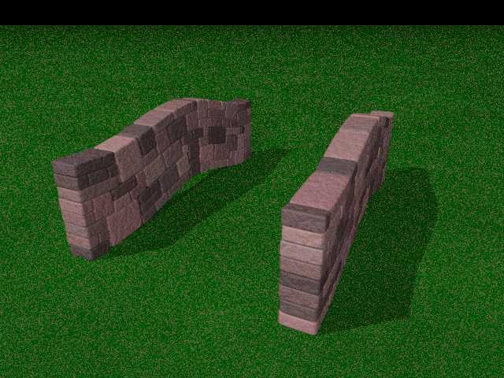
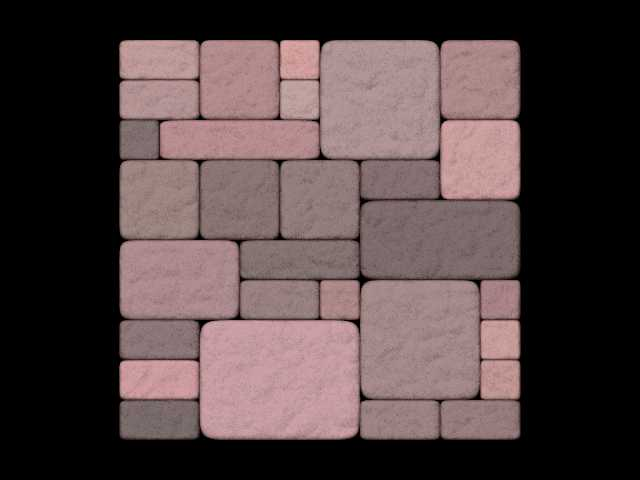
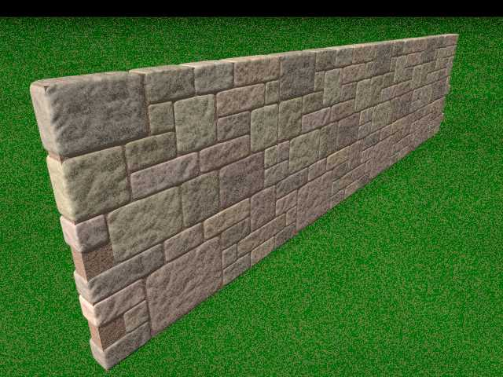
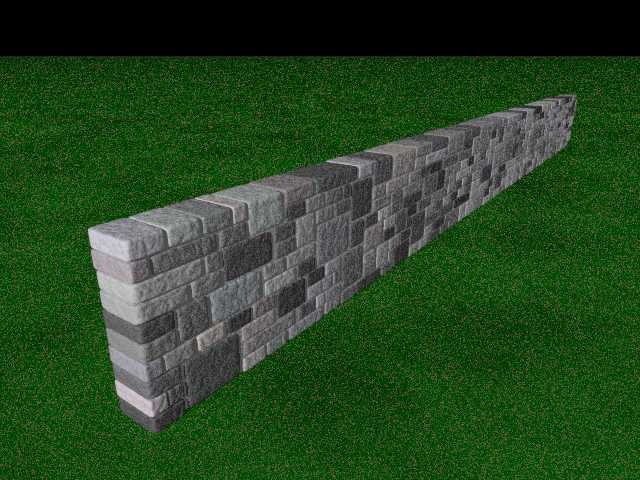
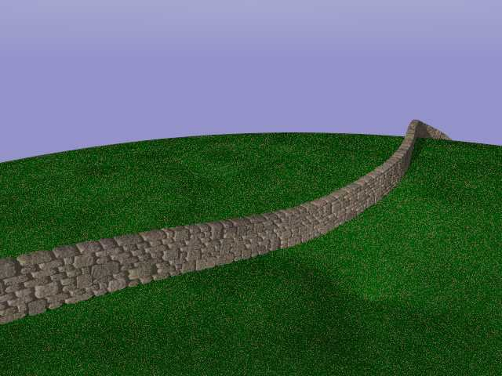
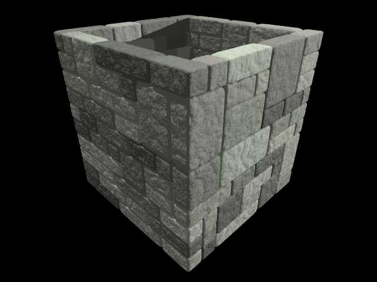
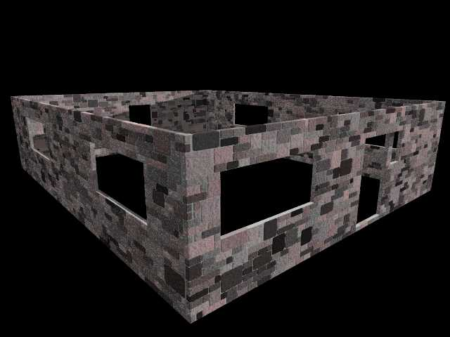
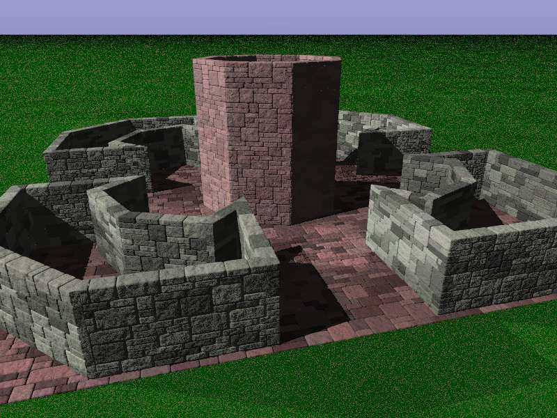
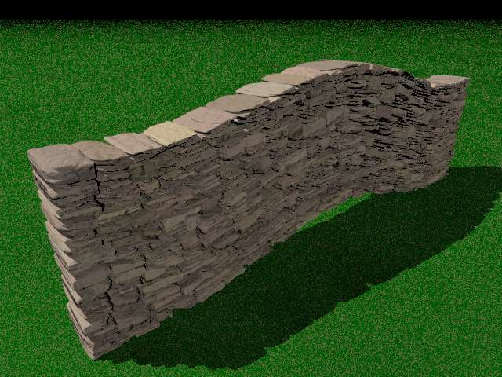

POV-Ray Object Collection
|
|
Overview Examples Macros Variables |
|
| 
|
The sample scene file 'blockwall.pov' contains plenty of examples showing the use of the various options and settings available with these macros. These examples are described and illustrated below. There are lots of optional settings that you can use to control the operation of the macros but it's likely that you'll only ever need a few of them, so it's easiest to cut and paste an example that's close to what you want to do and then use the Variables section of this page to swot up on just the specific settings that you need.
The position and alignment of the generated object depends on which macro you use to generate it, but the default settings generally create a wall with it's bottom left corner at the origin using a scale of 1 POV-Ray unit to represent 1 metre. The ScaleConvert macro on the object collection can be used to convert between different units. Some of the macros set values that can be useful to you after calling the macro when positioning/aligning things with the wall segments, as demonstrated in a number of the examples below.
The randomised blockwork pattern is controlled through a number of variables that allow you to define the proportion of large to small blocks, the maximum size of blocks and the relationship between the number of short, wide blocks and tall ones. Various standard block types and colors are incorporated and can be specified by name. Alternatively you can specify color limits and contrast settings to suit your own needs.
You can suggest changes to these macros or provide other feedback on the Object Collection newsgroup at http://news.povray.org/groups/povray.object-collection or (for registered users) using the feedback option available from the Object Collection Search page. If you wish to enhance the macros yourself you can register on the Object Collection website and then upload a new version through the contributions page (self registration usually just takes a few minutes).
| Example=0; Default settings | |
|---|---|
|

Example 0 illustrates the Blockwall macro using the default settings to generate a simple square slab of walling.
The default settings for the Blockwall macro produce a section of wall 0.1 units thick and 1 unit square. The section sits on the XZ plane with the bottom left corner at the origin. You can alter the defaults by setting control variables before calling the Blockwall macro to adjust the height, width and thickness dimensions along with the color and other texture settings (see Variables).
camera {orthographic
location 0.5-1.2*z look_at 0.5 } light_source {<-10,20,-50>, rgb 1} #include "blockwall.inc" Blockwall("") You can also wrap the macro call in an object statement and perform translations, rotations and scaling on the result. For example:
object {Blockwall("")
scale 0.5 rotate <3,0,4> translate x*1.3 } | |
| Example=1; Three copies with wrapping to interleave the ends. | |
|---|---|
|
The panels from Example 0 can be tiled, but the seams between adjacent panels would be readily apparent.
Example 1 uses the Blockwall_Wrap setting to tell the Blockwall macro to wrap some blocks around from the left hand side of a panel to the right hand side of the panel so that adjacent copies of the same blockwork segment can be joined together without generating vertical joints that run from the bottom to the top of the wall. This example shows 4 identical panels, one in the default position and the others displaced on either side. In this example a default value for the Blockwall_WallLength variable is set by the Blockwall macro because none has been specified prior to the macro call. You can use variables such as this after the macro has been run to generated the wall. In this example we use it to position wall segments. This example passes a parameter into the macro to use one of the standard block styles "BuffBrick". This to select non-default color settings for the blocks. The macro doesn't add Mortar to the blockwork, but you can readily add some using a simple POV-Ray primitive (in this case a box) at a depth of your choosing. This example uses the same normal and finish settings that were used to generate the blockwork (the defaults set by the macro) to texture the mortar. As with the Blockwall_WallLength variable, the default normal and finish identifiers are also set by the Blockwall macro because neither was specified prior to the macro call.
#declare Blockwall_Wrap = 1;
#declare Section = Blockwall("BuffBrick") // Show 3 copies of the same section side by side object {Section translate -Blockwall_WallLength*x} object {Section} object {Section translate Blockwall_WallLength*x} object {Section translate 2*Blockwall_WallLength*x} // Add some mortar box { <-0.994,0,0.006><3,0.994,0.074> texture { pigment {rgb <1,0.6,0.4>*0.6} normal {Blockwall_Normal scale 0.3} finish {Blockwall_Finish} } }  | |
| Example=2; Using Blockwall_Fill to create a wall. | |
|---|---|
|
Example 2 uses the Blockwall_Fill macro to define a box filled with blockwork. At times this can be more convenient than specifying the height, width and depth of the wall for the Blockwall macro using control variables.
This example illustrates the use of a superellipsoid to add mortar, removing the overspill of mortar that can be seen on the nearest corner in the image generated from Example 2. The superellipsoid is generated straddling the origin, so needs a bit more transformation to correctly scale it and move it to align with the centre of the wall.
object {Blockwall_Fill(<0,0,0>,<0.3,1,10>,"GreyBrick")} // Add some mortar superellipsoid { <0.1,0.05> rotate x*90 scale 0.5 translate 0.5 scale <0.3,1,10>-0.0160 translate 0.008 texture { pigment {rgb 0.68} normal {Blockwall_Normal scale 0.3} finish {Blockwall_Finish} } }  | |
| Example=3; Following a spline (a hump-back bridge). | |
|---|---|
|
Example 3 illustrates the Blockwall_FollowSpline macro using its default settings. This macro generates a wall that follows a spline assigned to the control variable Blockwall_Spline. This example calls the macro without explicitly setting the spline, so it uses the default setting which generates a short section of wall with a little hump in the middle. This default spline stretches out along the +Z axis.
Calling the macro a second time uses the same spline, but generates a different randomised pattern of blockwork. This is because the first call initialises a randomisation seed and subsequent calls just continue to call off random numbers from the same random number stream.
object {Blockwall_FollowSpline("")}
// Add a second wall following the same spline and translate it to the left. object {Blockwall_FollowSpline("") translate x*1.8}
| |
| Example=4; Dropping a spline onto an object | |
|---|---|
|
Example 4 shows how the Blockwall_DropSplineToSurface macro can be used in conjunction with the Blockwall_FollowSpline macro. The Blockwall_DropSplineToSurface macro drops the spline assigned to the Blockwall_Spline variable onto an arbitrary object that has been assigned to the Blockwall_Target identifier. In this instance a torus is used as the target object, so the Blockwall_DropSplineToSurface macro adjusts the spline so that it can subsequently be used to draw a wall that sits neatly on the surface of that torus.
The "RoughStone" block style specified as a parameter generates randomised stone shapes. The Blockwall_ClipBlock setting tells the macro to trim the edges of each block to give a smoothed appearance to the dressed surfaces of the wall.
#declare Blockwall_ClipBlock = 1;
// Define a surface to drop a spline onto. #declare Blockwall_Target = torus {8,12 translate -y*12 scale <1,0.4,1> translate <3,0,6> } // Create a spline above the target surface. #declare Blockwall_Spline = spline { cubic_spline -.25, < 0 ,1,-1> 0.00, < 0 ,1, 0> 0.20, < 1 ,1, 5> 0.40, < 2 ,1,10> 0.60, < 1 ,1,15> 0.80, < 0 ,1,20> 1.00, < 1 ,1,25> 1.25, < 2 ,1,30> } // Drop the spline onto the surface Blockwall_DropSplineToSurface() // Call the macro to generate a wall that follows the new spline object {Blockwall_FollowSpline("RoughStone")}  | |
| Example=5; Following an array of corner points. | |
|---|---|
|
Example 5 uses the Blockwall_FollowArray macro which draws a sequence of straight wall segments based upon corner points defined in the Blockwall_CornerArray array. The default points define a 1 metre cube with its bottom left corner at the origin.
This macro adjusts the corners so that the blocks are interwoven and don't overrun. This macro works best with wall segments that meet at right angles. It still works with non-perpendicular wall segments, but you may get some artifacts at the joints (see Example 8). If the first and last corner points are the same, the macro generates a closed shape and the blocks on the final corner are also interwoven. Otherwise it switches wrapping off for the ends so you get neat start and end sections.
// Call the macro to fill a box with a stone wall
object {Blockwall_FollowArray("GreenBrick")}  | |
| Example=6; Creating a shell with holes in it. | |
|---|---|
|
Example 6 uses the Blockwall_Shell macro to create a rectangular shell. This macro fills the perimiter of a box with walls. This example uses CSG to poke door and window holes into that shell. Warning. Using CSG with a union of so many objects increases the render time considerably. This example can take several minutes to render (about 10 min at 640x480, AA 0.3).
// Call the macro to fill a box with the outline of a stone wall
#declare OuterShell = object {Blockwall_Shell(<-4,0,0>,<4,2.4,10>,"ColorBrick")} #declare Mortar = difference { box {<-3.994,0.001,0.006>,<3.994,2.394,9.994>} box {<-3.924,0,0.076>,<3.924,2.4,9.924>} } #declare Holes = union { box {<0,0.1,-0.01><1,1.9,0.11>} // Front Door box {<1.2,1.2,-0.01><1.6,1.9,0.11>} // Side Window box {<-3.5,1,-0.01><-1.5,1.9,0.11>} // Front Window box {<0,0.1,9.8><1,1.9,10.01>} // Back Door box {<-4.01,1,1><-3.9,1.9,3>} // Window 1 in Left Side Wall box {<-4.01,1,6><-3.9,1.9,8>} // Window 2 in Left Side Wall box {< 4.01,1,1>< 3.9,1.9,3>} // Window 1 in Right Side Wall box {< 4.01,1,6>< 3.9,1.9,8>} // Window 2 in Right Side Wall } // Draw the Block Wall difference { object {OuterShell} object {Holes texture {Blockwall_ThisBlockTexture}} } // Add Mortar difference { object {Mortar} object {Holes} texture { pigment {rgb 0.68} normal {Blockwall_Normal scale 0.3} finish {Blockwall_Finish} } }  | |
| Example=8; A sequence of walls demonstrating the Blockwall_FollowArray macro with non-perpendicular corners | |
|---|---|
|
As was mentioned under Example 5 above, the Blockwall_FollowArray macro works best with wall segments that meet at right angles. Nevertheless, it does also support non-perpendicular corners. You may however get a few unwanted artifacts at, or near the corners. If you get artifacts that are particularly troublesome you may wish to try different settings for the Blockwall_SizeSeed seed stream to see if you can get a better randomised pattern for your purposes.
Example 8 shows a sequence of wall segments that could be used to represent garden planters to demonstrate the Blockwall_FollowArray macro with an array of arbitrary corner points that generate non-perpendicular corners. The tower in the centre illustrates how the array elements can be defined procedurally. The paving illustrates how you can adjust the horizontal and vertical bias and maximum block sizes. The horizontal and vertical settings usually differ for walling, whereas for paving it can be more realistic to make the horizontal and vertical settings the same.
// Create some fairly randomly shaped planters.
#declare Blockwall_WallHeight = 0.5; #declare Blockwall_MatrixSpacing = 0.04; #declare Blockwall_HBias = 0.5; #declare Blockwall_VBias = 3; #declare Blockwall_MaxHU = 5; #declare Blockwall_MaxVU = 3; #declare Blockwall_BlockThickness = 0.30; #declare Blockwall_Finish = finish {ambient 0.01}; #declare Blockwall_CornerArray = array [10] { <0.5 ,1.2>, <0.8 ,1.5>, <1.28 ,1.28>, <1.5 ,0.8>, <1.2 ,0.5>, <2.2 ,0.5>, <2.2 ,1.5>, <1.5 ,2.2>, <0.5 ,2.2>, <0.5 ,1.2> } #declare Blockwall_BlockThickness = 0.1; object {Blockwall_FollowArray("GreenBrick")} object {Blockwall_FollowArray("GreenBrick") rotate y*90} object {Blockwall_FollowArray("GreenBrick") rotate y*180} object {Blockwall_FollowArray("GreenBrick") rotate y*270} // Add the central feature (maybe a little tower or something). #declare Blockwall_WallHeight = 1.4; #declare Blockwall_CornerArray = array[9]; #local I = 0; #while (I<8) #declare Blockwall_CornerArray[I]= #local I = I + 1; #end #declare Blockwall_CornerArray[8]=Blockwall_CornerArray[0]; #declare Blockwall_ClipBlock = 1; Blockwall_FollowArray("PinkBrick") // Paving. To use as paving, we can use a matching horizontal and // vertical bias for the pattern and rotate the 'wall' to be horizontal. Blockwall_Undef() #declare Blockwall_WallLength = 4.5; #declare Blockwall_WallHeight = Blockwall_WallLength; #declare Blockwall_MatrixSpacing = 0.05; #declare Blockwall_HBias = 2; #declare Blockwall_VBias = 2; #declare Blockwall_MaxHU = 5; #declare Blockwall_MaxVU = 5; #declare Blockwall_Finish = finish {ambient 0.01}; object {Blockwall("") rotate x*90 translate <-Blockwall_WallLength/2,0,-Blockwall_WallHeight/2> } // Add some grass plane {y,-0.01 texture {GrassTexture}}  | |
| Example=9; A rough stone wall. | |
|---|---|
|
Example 9 generates a rough stone wall that illustrates the use of various matrix settings that can be used to control the block distribution and relative size of blocks in the randomised blockwork pattern.
The Blockwall_MatrixSpacing variable is set to 0.02, which represents a size of 2cm. This is the size of the smallest possible block, but the Blockwall_MaxHU, which controls the maximum number of horizontal units that a block can have, is set quite high and the Blockwall_HBias variable is assigned a small value, so an above average number of wide blocks will be generated. The maximum height of a block is set to half the width (Blockwall_MaxVU) and the vertical bias is higher (Blockwall_VBias), generating a lot more short blocks than tall blocks. The surfaces of the blocks are clipped by setting Blockwall_ClipBlock to 1. Otherwise, with these sort of values, the blocks would protrude quite some distance out from the surface, giving quite a messy looking wall.
#declare Blockwall_MinColor = <0.98,0.65,0.25>;
#declare Blockwall_MaxColor = <1.0 ,0.7 ,0.3>; #declare Blockwall_Contrast = 0.6; #declare Blockwall_ClipBlock = 1; #declare Blockwall_MatrixSpacing = 0.02; #declare Blockwall_HBias = 0.3; #declare Blockwall_VBias = 3; #declare Blockwall_MaxHU = 10; #declare Blockwall_MaxVU = 5; #declare Blockwall_Finish = finish {phong 0 ambient 0} #declare Blockwall_Normal = normal { average normal_map { [0.5 granite 1 scale 0.25] [0.5 agate 1 scale 0.05] [1.0 marble 1 rotate z*90 turbulence 0.5 scale <0.3,0.1,0.5>] } } // Call the macro to generate a wall from a spline. // The default spline will produce a straight wall with a hump. object {Blockwall_FollowSpline("BuffStone")} // Add some grass plane {y,0 texture {GrassTexture}}  | |
| Example=20; Adjusting for Different Lighting Levels | |
|---|---|
|
Example 20 illustrates the use of the Blockwall_Brightness setting to adjust for alternative lighting levels. Different scene files can use very different lighting levels. The brightness setting helps you to compensate for this.
The image on the left was rendered with the default settings and a single full intensity light source. The central image shows bleaching caused by color saturation when ten times as much light is added to the scene. The image on the right uses the same light settings as the central image, but is generated with:
#declare Blockwall_Brightness = 0.1;
object {Blockwall("")} to redress the balance. The 'Blockwall_Brightness' variable is simply used as a multiplication factor for the color when the macro defines the block texture. It can therefore be used to help counteract lighting variations from one scene to another. As in this example, other factors such as the surface normal and finish settings can also influence the results, so this setting cannot necessarily give you a complete and exact match. | |
| Blockwall macro | |||
|---|---|---|---|
|
You can call the Blockwall macro to create a single, straight section of block walling. The functionality is controlled through a series of variables, each of which has a default value, so you can generate the default section of paving with the following code:
camera {orthographic location <0,2.8,1.74> look_at 1.75*z }
light_source {<-10,20,-5>, rgb 1} #include "blockwall.inc" Blockwall("") This creates a 1 metre square and 8cm thick section of wall (where 1 POV-Ray unit = 1 metre) with its bottom left corner at the origin. You can use variables such as Blockwall_WallHeight, Blockwall_WallLength, Blockwall_BlockThickness and Blockwall_MortarGap to control the dimensions. For example:
#include "blockwall.inc"
#declare Blockwall_WallHeight = 2; #declare Blockwall_WallLength = 5; Blockwall("") Other variables enable you to control the color, finish, surface normal and the maximum sizes and distribution of different sized blocks throughout the wall. You can also adjust the seed streams used for the randomisation of color and block size, so that, if a particular random pattern causes you problems, you can just use a different one (see Blockwall_ColorSeed and Blockwall_SizeSeed). The Blockwall_Block macro has 1 parameter:
| |||
| Blockwall_Fill macro | |||||||
|---|---|---|---|---|---|---|---|
|
You can call the Blockwall_Fill macro to create a single, straight section of block walling based on two vectors that delimit the extents of the wall, passed as parameters into the macro. This is an alternative to setting variables to define the size of the wall with the Blockwall macro.
This macro fills the area delimited by the minimum extent vector and a maximum extent vector with block walling. The wall is oriented so that the thinest horizontal dimension (X or Z) is used for the block thickness and the larger horizontal dimension is used as the wall length. The box used is aligned to the X, Y and Z axes but you can readily transform the returned object by wrapping the macro call inside an 'object' statement. You can generate the default block wall with the following code:
#include "blockwall.inc"
Blockwall_Fill(<0,0,0>,<2,1,0.3>,"") The functionality is still controlled through the same variables as the Blockwall macro, except that the dimensions specified in the parameters override any previous size settings. The Blockwall_Fill macro has 3 parameters:
| |||||||
| Blockwall_Shell macro | |||||||
|---|---|---|---|---|---|---|---|
|
You can call the Blockwall_Shell macro to wrap a wall around the perimiter of a box defined using the minimum and maximum extent vectors supplied as parameters to the macro call. This creates a form similar to the shell of a simple rectangular building inside a box aligned to the X, Y and Z axes. The macros functionality is controlled through a series of
variables,
each of which has a default value.
You can generate a shell wall with the following code: Blockwall_Shell(<-2,0,0>, <2,2.3,5>, "") This gives you a wall structure that could be used as the outer shell of a building. These parameters generate a 4 unit wide, 2.3 unit high and 5 unit long rectangular wall centred on the +Z axis. The Blockwall_Shell macro has 3 parameters:
| |||||||
| Blockwall_FollowArray macro | |||
|---|---|---|---|
|
You can call the Blockwall_FollowArray macro to create a multi-segment wall comprising a series of connected, straight sections where the bottom front edge of the wall follows the 2D coordinate vectors specified in the Blockwall_CornerArray array. Only the X and Z coordinates need to be specified. The wall will sit on the XZ plane (ie at y=0). If the Blockwall_CornerArray array is not defined when the Blockwall_FollowArray macro is called then a default array will be created that describes a 1 unit square that will be delimited by the wall.
If the first and last point in the Blockwall_CornerArray array are the same the ends of the block wall will be interwoven. Otherwise the ends blocks at each of the two ends of the wall will be vertically aligned. The functionality of this macro is controlled through a series of variables, each of which has a default value. You can generate the default block wall with the following code: Blockwall_FollowArray("") See Example 8 for a slightly more complex example. The Blockwall_FollowArray macro has 1 parameter:
| |||
| Blockwall_FollowSpline macro | |||
|---|---|---|---|
|
You can call the Blockwall_FollowSpline macro to create a wall that follows a spline. The front face of the base of the spline will follow the 3D spline assigned to the identifier Blockwall_Spline. If this identifier is not set the Blockwall_FollowSpline will define a default spline that creates a hump-baked bridge parapet as illustrated in Example 3.
It is usual to specify a curved spline rather than a linear spline as corners resulting from a linear spline will not interlace properly. To create a series of straight sections where the base of the wall is level you can use the Blockwall_FollowArray macro which should handle the corners better. The functionality of this macro is controlled through a series of variables, each of which has a default value, so you can generate the default block wall with the following code: Blockwall_FollowSpline("") This macro can also be used in conjunction with the Blockwall_DropSplineToSurface macro to draw a wall that follows the contours of a surface as as illustrated in Example 4. The Blockwall_FollowSpline macro has 1 parameter:
| |||
| Blockwall_DropSplineToSurface macro | |
|---|---|
|
You can call the Blockwall_DropSplineToSurface macro to drop the spline assigned to identifier Blockwall_Spline onto the surface of the target object assigned to the identifier Blockwall_Target. For example:
Blockwall_DropSplineToSurface() Example 4 illustrates the use of this macro in conjunction with the Blockwall_FollowSpline macro to create a wall that follows the contours of an object. The Blockwall_DropSplineToSurface macro has 0 parameters: | |
| Blockwall_Block macro | |||||||||||
|---|---|---|---|---|---|---|---|---|---|---|---|
|
The Blockwall_Block macro is used to create an individual block based upon the specified settings. This macro is called repeatedly by the other Blockwall macros to draw each of the blocks that go to make up a section of blockwork.
You won't normally need to invoke this macro directly, it is called indirectly by the other Blockwall macros. However, you can if you wish to generate individual blocks. The Blockwall_Block macro can easily be tailored to add more 'predefined' colors or shapes to those supplied. You can do this by adding a new '#case' clause to one of the two '#switch' statements. This usually only involves adding a couple of lines using basic coding elements, such as declarations of colors etc. and subsequently enables you to refer to your new style of block by name whenever you wish to use it in the future. The Blockwall_Block macro has 5 parameters:
| |||||||||||
| Blockwall_BlobBlock macro | |||||
|---|---|---|---|---|---|
|
This macro is called by the Blockwall_Block macro when a block type parameter of "RoughStone" is used with one of the Blockwall macros. This macro adds blob components together to create a rough stone shape of the block size required. By default the shape can extend slightly beyond the limits specified, but the Blockwall_ClipBlock variable can be used to clip the edges so that the shape is clipped to size, giving partially flat faces to the blocks. For example:
Blockwall_BlobBlock(2, 3) Returns a blob object that is 2 units wide by 3 units high. Blocks dimensions are defined as integer numbers of units. This macro contains dedicated code to generate smaller blocks and more generic code for categories of larger blocks. If you permit very large blocks e.g. 6x5 you may find that the generic code does a poor job. If this is a problem you can fairly simply add a #case statement to this macro to handle a particular new block size or new categories of block sizes with just a few lines of SDL. Each block consists of a core formed using 3 squashed spherical components plus 8 spherical corner components that draw the shape out into a more rectangular shape. The Blockwall_BlobBlock macro has 2 parameters:
| |||||
| Blockwall_CoreBlob macro | |||||||||
|---|---|---|---|---|---|---|---|---|---|
|
This macro is called by the Blockwall_Block macro when you use the "Roughstone" block style. This macro is called 3 times per block to add 3 large blobs to form the core of the block. You won't need to call this macro unless you are adjusting the blob definitions used for the "Roughstone" block style.
Typical values passed to this macro could look something like this:
Blockwall_CoreBlob(
Blockwall_CoreBlobRadius, Blockwall_CoreStrength, Blockwall_CoreScale, Blockwall_CoreHeight ) The Blockwall_CoreBlob macro has 4 parameters:
| |||||||||
| Blockwall_CornerBlobs macro | |||||||||
|---|---|---|---|---|---|---|---|---|---|
|
This macro is called by the Blockwall_Block macro to add 8 corner blobs to a block core. You won't need to call this macro unless you are adjusting the blob definitions used for the "Roughstone" block style.
Typical values passed to this macro could look something like this:
Blockwall_CornerBlobs(0.8, 0.3, <0.55,0.55,0.55>, 1) The Blockwall_CornerBlobs macro has 4 parameters:
| |||||||||
| Blockwall_AdjustCorner macro | |||
|---|---|---|---|
|
This macro is called by the Blockwall_FollowArray macro against the matrix that stores the blockwork pattern to adjust blocksizes at the corner positions so that they don't overlap the corners. It adjusts the matrix so that there is a mortar gap either to the left or right of each corner stone for a specified corner position. It follows a line up the matrix and, if there is no suitable junction it creates one by shortening blocks so that the matrix can fold along the required line. For example:
Blockwall_AdjustCorner(12) Follows the matrix up at column 12 so that it can fold cleanly after column 11. The Blockwall_AdjustCorner macro has 1 parameter:
| |||
| Blockwall_MakeMatrix macro | |
|---|---|
|
You can call this macro to generate a randomised blockwork pattern. This macro defines and populates a matrix that describes the positions and sizes of a series of blocks. The start position of each block corresponds to one of the grid positions in the matrix. The X and Y dimensions of a block are randomly generated but are always whole numbers of grid positions and meet a certain set of user defined criteria which control the relative distribution of large and small blocks.
The functionality of this macro is controlled through a series of variables. Blockwall_MatrixDimX and Blockwall_MatrixDimY control the number of units in the horizontal and vertical dimensions of the matrix. The Blockwall_MaxHU and Blockwall_MaxVU settings define maximum block sizes in terms of horizontal and vertical units. The Blockwall_HBias and Blockwall_VBias variables control the proportion of blocks that will be large in a given dimension. Each of these variables has a default value, so you can generate the default block wall with the following code: Blockwall_MakeMatrix()
The Blockwall_MakeMatrix macro has no parameters: | |
| Variable | Description |
|---|---|
| Blockwall_MortarGap |
Decimal value used by the Blockwall_Block macro to control the average space between blocks. The generated blocks are defined to fit into the space calculated using the Blockwall_BlockThicness setting with half this gap all around them. The default value is 0.0001 which represents 0.01mm to produce blocks that butt right up against each other. Because the Superellipsoid shape is usually used to generate rounded blocks, the space available for mortar will actually appear to be substantially larger. If you use the "Box" or "Polygon" shapes you should increase this value to about 0.01 to give a 1cm gap because these shapes don't have rounded edges (see example 18).
The general default is set in the Blockwall_Block macro. The Blockwall_FollowArray macro also sets the same default value because it uses the value in its calculations and therefore needs a value to avoid errors. |
| Blockwall_BlockThickness |
Decimal value used by the Blockwall_Block macro to control the Block Thickness. The general default value is 0.08 POV-Ray units and is intended to represent an 8 centimetre thick block except that:
|
| Blockwall_BlockRoundness | Decimal value between 0 and 1 used by the Blockwall_Block macro to control the roundness of the blocks when using the Superellipsoid object, which is used to create all of the colored brick objects and is the default shape. The default value is 0.2 which produces a superellipsoid block with a distinctly rounded edge. A value of 0 gives square edges and 1 makes the blocks spherical. |
| Blockwall_MinColor | 3D RGB color vector used by the Blockwall_Block macro to control the selection of colors. This vector provides the minimum red, green and blue values. The default value is <0.7,0.4,0.4> which makes the minimum color mostly red. Each color element is generated independently, so a minimum of <0,0,0> with a maximum of <1,1,1> will permit any valid color to be selected. See example 12 for an illustration of this setting. |
| Blockwall_MaxColor | 3D RGB color vector used by the Blockwall_Block macro to control the selection of colors. This vector provides the maximum red, green and blue values. The default value is <0.9,0.45,0.45> which makes the maximum color a fairly bright red. Each color element is generated independently, so a minimum of <0,0,0> with a maximum of <1,1,1> will permit any valid color to be selected.See example 12 for an illustration of this setting. |
| Blockwall_Contrast |
Decimal value between 0 and 1 used by the Blockwall_Block macro to control the degree by which randomly selected colors can be randomnly darkened. The default value is 0.8 which results in each generated color value being multiplied by a random factor between 1 and 0.2. A setting of 0 results in the colors being within the range specified using Blockwall_MinColor and Blockwall_MaxColor. A setting of 1 means that randomly selected blocks could be darkened all the way down to black.
Most real blockwork consists of a base color range with some blocks being a darker version of that same limited range. This setting allows that sort of control to be applied. See example 13 for an illustration of this setting. |
| Blockwall_Brightness |
Decimal value used by the Blockwall_Block macro to control the overall brightness of the block texture. The default value of 1 doesn't adjust the colors at all.
This setting is designed to accommodate the hugely different lighting settings used in POV-Ray scene files. Some people use a lot of light and dim colors. Others use low light levels and bright colors. The default settings and most of the examples use a single, full light source. If your scene uses more light you can reduce this value. If you use less light in your scene you can increase this value. See example 20, which uses a light source that is 10 times brighter, setting this value to 0.1 to compensate and avoid color saturation artifacts. |
| Blockwall_ClipBlock | Integer value used by the Blockwall_Block macro when the "RoughStone" block type is specified to control whether or not a block made up of blobs is clipped so that it fits completely within the block size specified. The default value is 0 which permits the blocks to overlap the edges of the theoretical container. A value of 1 cuts off the overlaps leaving a partially flat surface on the face of any block that extends beyond the container. |
| Blockwall_Normal | A normal definition used by the Blockwall_Block macro to define the normal component of a texture used for the blocks. The default normal averages a granite and an agate normal. See example 14, which demonstrates how to override this default by specifying an agate normal for the blocks on the left. |
| Blockwall_Finish |
A finish definition used by the Blockwall_Block macro to define the finish component of a texture used for the blocks. The default finish uses a small amount of specular and a little roughness. See example 14, which demonstrates how to override this default by specifying a phong setting of 1 for the blocks on the right.
Adding phong or reflection to the finish setting can provide a simple way of emulating wet blocks. |
| Blockwall_CornerDepth | Integer value used by the Blockwall_BlobBlock macro to control the depth of the blobs (the Z dimension) used to influence the shape of the corners of blocks created using the blob object. This object is only used if the "RoughStone" block style is used. None of the other object types use this setting. The default value is 1 which results in no scaling of the depth of the corner blobs. A value of 0.5 scales in Z by 0.5 reducing the influence of the corner blobs back through the depth of the block. |
| Blockwall_MatrixArray |
An array with 3 dimensions populated by the Blockwall_MakeMatrix macro with a randomized blockwork pattern and used by the other Blockwall macros to construct a wall. You should not normally need to manipulate this array directly. The only macro that alters this array once it's been defined is the Blockwall_AdjustCorner macro which adjusts block sized along a specified vertical line so that the blocks will fold neatly around corners.
The first two dimensions are used to index a location in the matrix. The third dimension stores two values. The first value is used to store the number of horizontal units occupied by a block starting with its bottom left corner at that location, or 0 if no block starts here. The second dimension is used to store the number of vertical units occupied by a block starting with its bottom left corner at the location. If the second dimension is not set by the Blockwall_MakeMatrix macro then that position is inside a block. |
| Blockwall_MatrixDimX | Integer value used by the Blockwall_MakeMatrix macro to define the X dimension of the matrix used to construct a blockwork pattern. The Blockwall_MakeMatrix sets a default value of 50 POV-Ray units, but this default value is seldom used as the Blockwall macros generally explicitly define this value. For example, the Blockwall macro defines this value as floor(max(1,Blockwall_WallLength/Blockwall_MatrixSpacing+0.5)) to derive the whole number of blockwork units that will fit into the required wall length. |
| Blockwall_MatrixDimY | Integer value used by the Blockwall_MakeMatrix macro to define the Y dimension of the matrix used to construct a blockwork pattern. The Blockwall_MakeMatrix sets a default value of 40 POV-Ray units, but this default value is seldom used as the Blockwall macros generally explicitly define this value. For example, the Blockwall macro defines this value as floor(max(1,Blockwall_WallHeight/Blockwall_MatrixSpacing+0.5)) to derive the whole number of blockwork units that will fit into the required wall height. |
| Blockwall_HBias |
Decimal value used by the Blockwall_MakeMatrix macro to control the Horizontal Bias when selecting randomised block sizes. If the same number of big and small blocks are selected then the larger blocks tend to overwhelm the smaller blocks as they occupy a far greater surface area in the pattern. This variable allows you to influence the blocksize selection to create more blocks with a smaller horizontal dimension. This value is used as an exponent on the random decimal fraction used to select the number of horizontal units used for the block dimensions. Increasing the value of this exponent increases the number of smaller values generated.
The default value is 2.5. A value of 1 would create a uniform distribution of small and large values. A value of 30 produces the occasional large block. |
| Blockwall_VBias |
Decimal value used by the Blockwall_MakeMatrix macro to control the Vertical Bias when selecting randomised block sizes. If the same number of big and small blocks are selected then the larger blocks tend to overwhelm the smaller blocks as they occupy a far greater surface area in the pattern. This variable allows you to influence the blocksize selection to create more blocks with a smaller vertical dimension. This value is used as an exponent on the random decimal fraction used to select the number of horizontal units used for the block dimensions. Increasing the value of this exponent increases the number of smaller values generated.
The default value is 3. A value of 1 would create a uniform distribution of small and large values. A value of 30 produces the occasional large block. To get a wall made mainly of long low blocks you can increase this value and use a low value for Blockwall_HBias. |
| Blockwall_MaxHU | Integer value used by the Blockwall_MakeMatrix macro to limit the number of horizontal units that a block can occupy. The default value is 5. |
| Blockwall_MaxVU | Integer value used by the Blockwall_MakeMatrix macro to limit the number of vertical units that a block can occupy. The default value is 3. If Blockwall_MaxHU is set to 5 then the largest block you can get in a pattern will be 5x3, but a particular random pattern may not contain any blocks that big. |
| Blockwall_MatrixSpacing | Decimal value used by the various Blockwall macros to control the Matrix Spacing (the distance from a one unit cell to the adjacent cell). The default value is 0.1 POV-Ray units and is intended to represent a spacing of 10 centimetres. This size represents the size of the smallest block (before the mortar gap is trimmed off the blocksize) that can be used in the wall and all other sizes are multiples of this size so, with the default matrix spacing a 3x2 block will be 30 centimetres by 20 centimetres (minus any mortar gap defined). |
| Blockwall_Wrap |
Integer value used by the Blockwall_MakeMatrix macro to control whether or not the blockwork pattern is able to wrap around from the last column to the first column in the blockwork pattern matrix. The default value is 0 which switches wrapping off. A value of 1 switches wrapping on. The Blockwall_FollowArray macro switches wrapping on automatically if the first and last points of the array are the same, creating a closed shell. The Blockwall_Shell macro uses the Blockwall_FollowArray macro to draw a closed shape, so effectively uses wrapping by default.
You should set this value to 1 if you specify a closed spline for use with the Blockwall_FollowSpline macro to avoid having a seam at the join. Setting this value to 1 when using the Blockwall macro or the Blockwall_Fill gives you a panel that you can tile horizontally without apparent seams, but will give you wiggly ends, so you may wish to use CSG to trim them. |
| Blockwall_RoughStoneRandomness | Decimal value used by the Blockwall_Block macro to control the randomness of rough stone walling. The default value is 1 which adds quite a lot of randomness. Normal values range from 0 to 1, but you can go over 1 if you wish. |
| Blockwall_RoughStoneSeed | Randomisation seed stream definition used by the Blockwall_Block macro to control the randomisation used for generating rough stone walling. The default stream is seed(1). If the randomisation generates an unwanted pattern you can set this seed to generate a different pattern. |
| Blockwall_ColorSeed | Randomisation seed stream definition used by the Blockwall_MakeMatrix macro to control the color seed. The default stream is seed(1) and normally you don't need to alter this value as it is initialised with the first macro call, producing a unique sequence of randomised colors for each subsequent call. However, if a particular call to one of the Blockwall macros produces a randomised pattern that causes you problems you can redeclare this seed stream before making the macro call to generate a different randomised color pattern. |
| Blockwall_SizeSeed | Randomisation seed stream definition used by the Blockwall_MakeMatrix macro to control the size seed. The default stream is seed(2) and normally you don't need to alter this value as it is initialised with the first macro call, producing a unique sequence of randomised block sizes for each subsequent call. However, if a particular call to one of the Blockwall macros produces a randomised pattern that causes you problems you can redeclare this seed stream before making the macro call to generate a different randomised block size pattern. |
| Blockwall_WallLength | Decimal value used by the Blockwall macros to control the Wall Length. You can use this value with the Blockwall macro to set the wall length. The default value defined by the Blockwall macro is 1 POV-Ray unit which is intended to represent a wall length of 1 metre. Most of the Blockwall macros calculate this value based upon other settings. For example, the Blockwall_FollowSpline macro calculates the length of the Blockwall_Spline spline and the Blockwall_FollowArray macro adds up the lengths of the lines joining the corners defined in the Blockwall_CornerArray array. |
| Blockwall_WallHeight | Decimal value used by the Blockwall macros to control the height of the generated wall. The Blockwall and Blockwall_FollowArray macros use a default of 1 POV-Ray unit (to represent 1 metre). The Blockwall_FollowSpline macro uses a default of 0.8 (to represent 80 centimetres). The Blockwall_Shell and Blockwall_Fill macros both explicitly set the wall height based upon the parameters passed on the macro call. |
| Blockwall_CornerArray |
Array of 2D (X and Z) coordinates used by the Blockwall_FollowArray macro as the corner points of the base of the front face of the wall that it creates. If not already defines, an array is defined that creates a 1 unit cube with its bottom left corner at the origin.
The wall generated by the Blockwall_FollowArray macro sits on the XZ plane (y=0), but you can transform it from there to wherever you need to use it in your scene by wrapping the macro call in an object statement (see example 2) |
| Blockwall_Spline |
Spline definition used by the Blockwall_FollowSpline macro to determine the line that the base of the front face of the wall that it creates will follow. If not specified, the Blockwall_FollowSpline macro defines a default cubic spline that starts at the origin and extends 1.25 units along the +Z axis. This default spline has a slight vertical hump in the middle intended to represent the shape of the parapet on a hump-backed bridge.
The Blockwall_DropSplineToSurface macro can be used to manipulate the spline assigned to the Blockwall_Spline identifier by dropping it onto the surface of an object assigned to the Blockwall_Target identifier. This is done using the POV-Ray trace command to drop a line down from a large number of points on the original spline, usually resulting in a larger spline. The results are written back into the same spline identifier (Blockwall_Spline) as a cubic spline (irrespective of the original spline type). It's up to you to make sure that the spline is entirely above the surface onto which it needs to be dropped. |
| Blockwall_Target |
A POV-Ray object used by the Blockwall_DropSplineToSurface macro to manipulate a spline assigned to the Blockwall_Spline identifier. The spline will be dropped onto the surface of this object. The default value is plane {y,-0.01}.
It's up to you to make sure that the spline is entirely above the surface onto which it needs to be dropped. |
| Blockwall_ThisBlockTexture |
A read-only texture setting that returns the last texture definition used to create a block. In fact you can set this texture, but it has no affect on the operation of the macro which will simply overwrite it on each call.
This can be handy when cutting a section of blocks using CSG (Constructive Solid Geometry) operations to apply a credible texture to the cut surface (See example 7) |
| Blockwall_CentreToCentre | A read-only variable that returns the distance in X that you need to translate one panel to the left or right to join two copies of the same panel seamlessly together (See example 1). This is only really of use with walls generated using the Blockwall and Blockwall_Fill macros. These macros overwrite this value each time they are called. |
| Blockwall_Debug | Integer value used by the Blockwall_FollowArray macro to switch on or off a small number of debug messages. The default value is 0 (no debug messages) a value of 1 displays the debug messages. |
{kind=link}
{kind=link}
{kind=link}
{kind=link}
{kind=link}
{kind=link}
{kind=link}
{kind=link}